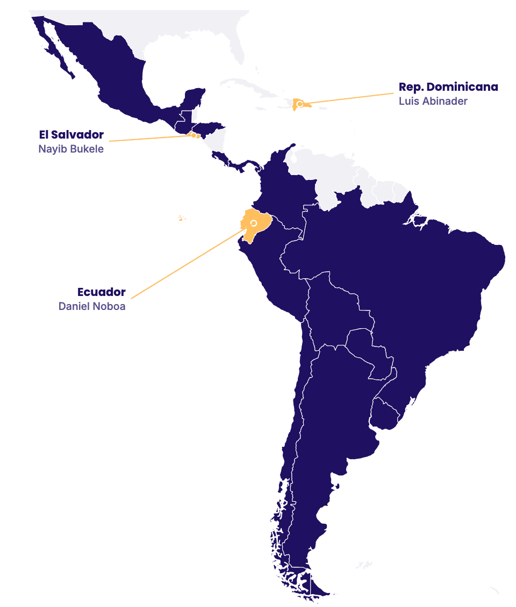

Resultados del Latinobarómetro 2025-2026
El Latinobarómetro es uno de los estudios de opinión pública más amplios de América Latina: desde 1995 mide lo que piensan los ciudadanos de la región sobre la democracia, la economía y sus instituciones.
Su edición más reciente, con más de 19.000 entrevistas en 17 países, muestra que la región empieza a reconciliarse con la democracia, pero en Ecuador ese proceso va más lento: el apoyo se queda en 43%, nueve puntos por debajo del promedio regional. Las razones pasan por la economía, el Estado y la inseguridad.
Entre 2018 y 2023, la democracia en América Latina vivió su peor momento en tres décadas. Según el informe, ese período coincidió con la pandemia y, sobre todo, con “el fin de la década de 2010, que había traído malas noticias económicas sostenidas y en la que estallaron socialmente tres países de la región en 2019: Colombia, Chile y Ecuador”. Desde 2024 la región se recupera y hoy el apoyo llega a 52%.
En Ecuador la caída fue más brusca: perdió 36 puntos entre 2017 y 2020 y, aunque se recupera desde entonces, sigue por debajo del promedio regional.
Apoyo a la democracia: Ecuador vs. América Latina
“La democracia es preferible a cualquier otra forma de gobierno”, % de acuerdo
Según el informe, el apoyo a la democracia depende en buena medida de los resultados que perciben los ciudadanos. En el caso de Ecuador, los datos permiten revisar cuatro ámbitos: la economía, el Estado, la seguridad y la confianza en las instituciones.
El malestar con la economía es casi total: el 88% de los ecuatorianos no está satisfecho con cómo funciona y apenas el 11% lo está. Ese desencanto se confirma cuando la pregunta baja a lo personal. Según Click Report (septiembre de 2026), para 6 de cada 10 ecuatorianos la principal preocupación son los problemas económicos en su conjunto: la falta de dinero, la inestabilidad laboral y otros.
Aun así, el descontento no se traduce en un rechazo al modelo. En la medición de 2024, tres de cada cuatro ecuatorianos (75%) creían que la economía de mercado es el único camino al desarrollo, más que en Perú (72%) y Colombia (68%). Además, ese respaldo no depende de la coyuntura: entre 2018 y 2024 subió de 63% a 75%, aunque el empleo adecuado bajó y el PIB se contrajo en 2020 y 2024.
Apoyo al mercado, empleo adecuado y crecimiento
El funcionamiento del Estado es otro frente donde el sistema no cumple las expectativas. Hoy apenas uno de cada cinco ecuatorianos siente que el Estado ha hecho algo por él y su familia, menos de la mitad que en 2011, y Ecuador pasó de estar por encima del promedio regional a quedar por debajo. La misma insatisfacción aparece en los servicios y en cómo se usan los impuestos.
Ecuador evalúa sus servicios públicos peor que la región
Ese malestar con el Estado ayuda a entender lo que pasa en las urnas. El propio informe sostiene que estos datos avalan “la hipótesis de que se vota pragmáticamente por un malestar”. Desde 2022, solo tres presidentes de la región lograron la reelección: los de El Salvador, República Dominicana y Ecuador. En los otros 13 países que votaron hubo cambio de presidente.
Solo tres presidentes lograron la reelección
Resultado de la última elección presidencial en cada país

Reelección
Cambio de presidente
Donde la deuda del Estado se siente con más fuerza es en la calle. Ecuador tiene hoy la tasa de victimización más alta de América Latina, el crimen organizado ya se percibe como parte del entorno cotidiano y la mayoría cree que el país está perdiendo la batalla contra el narcotráfico.
La inseguridad golpea más a Ecuador que a la región
cree que el país está perdiendo la batalla. Solo el 14% cree que se está ganando.
Por eso la seguridad se volvió el filtro con el que se mira todo lo demás.
La confianza de los ecuatorianos dibuja un mapa claro.
Cuando la pregunta es por la institución, ni la presidencia (23%) ni el Gobierno (22%) superan la cuarta parte de confianza. Pero cuando pasa a la persona, el resultado cambia: Daniel Noboa alcanza un 43,9% de aprobación, según Click Research (septiembre de 2026). Es decir, los ecuatorianos confían más en la figura que en la institución que representa.
A pesar de su desencanto, los ecuatorianos no le han dado la espalda a la democracia. La valoran poco, desconfían de sus instituciones y casi la mitad cree que podría funcionar sin Legislativo (49%) o sin oposición (45%), muy por encima del 35% regional. Pero cuando se trata de votar, la respuesta es otra: casi siete de cada diez no conciben una democracia sin elecciones.
Con ese punto de partida llega el próximo ciclo electoral: un electorado escéptico de sus representantes, pero dispuesto a usar el voto para exigir resultados. El informe deja cuatro pistas sobre lo que podría buscar:
La seguridad como puerta de entrada
El 60% respalda la mano dura y el 47% aceptaría un gobierno no democrático si resuelve los problemas del país.
Resultados antes que ideología
Con el 88% insatisfecho con la economía y el 75% a favor del mercado, las propuestas concretas de empleo e inversión tienen terreno.
Ánimo de cambio
Solo el 25% cree que el país va en la dirección correcta.
Personas antes que partidos
Con apenas 11% de confianza en los partidos, ganan los liderazgos personales y la fragmentación.
Quien logre convencer de que puede dar respuestas concretas, sobre todo en seguridad y economía, tendrá ventaja, venga de donde venga.
Fuente: Corporación Latinobarómetro, informe 2025/2026 y banco de datos en línea; INEC (ENEMDU anual); FMI; Click Research y Click Report (septiembre de 2026).